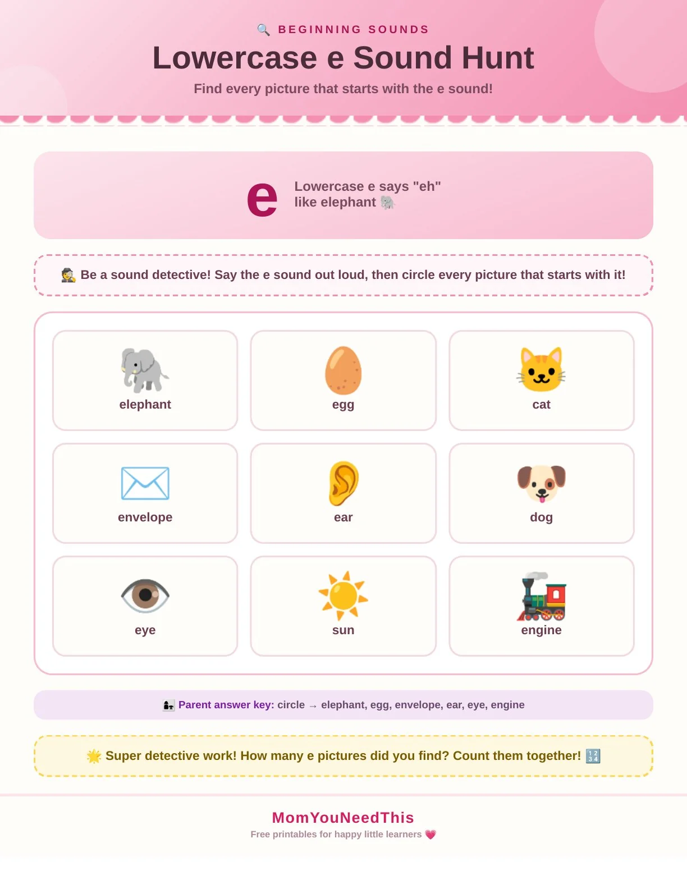

Lowercase e Sound Practice Recognize The Lowercase e And Its Sound
Most of the letters children see in books are lowercase — and none more than e, the most common letter of all! This printable helps your little learner recognize the lowercase e and connect it to its short beginning sound.
🐘 Elephant
🥚 Egg
👁️ Eye
Quick Answer
This free printable helps preschoolers connect the lowercase letter e with its short beginning sound — /e/, the sound in elephant, egg and the start of every. Children hunt for the letter e among other letters and circle every one they find, building phonemic awareness and letter recognition. Designed for ages 3-5. Download and print at home with no signup needed.

🔡 Find The Lowercase e
Point to the lowercase e together and say its sound. Then find every e hiding among the other letters and circle it. Small e is a little loop with a short middle stroke — it is smaller than most of its neighbours, so look low, between the lines.
⬇️ Download Free Printable 🖨️ Print🎁 Free printable for toddlers & preschoolers
📖 Spot It In Books
After the printable, hunt for the letter e in a favorite picture book — you will not hunt long, because e is the most common letter in English. Words like elephant and egg begin with its sh
🤝 Pair Uppercase And Lowercase
Show how big E and little e are the same letter — and be honest: this pair looks nothing alike. Capital E is all straight lines and bars, while small e is a tiny loop. Children have to learn this pair as two separate shapes, and matching them builds strong letter knowledge.
rcaseShow how big E and little e are the same letter — just different sizes. Matching them builds strong letter knowledge.
🎨 Keep Exploring Free Letter Activities
More alphabet learning activities are added regularly for toddlers and preschoolers.
🎁 View All Free Resources🔊 The e Sound
The short e sound is a relaxed little sound made with the mouth barely open: /e/ — eh. It starts elephant, egg and elbow, and it is the sound at the start of every, engine and envelope too.
E has a second sound — its long sound, which is simply its name. You can hear it in eye (one of the words on this page), eagle, emu and eel. This page practises the short sound, the one children meet first and most often.
Small e is the hardest-working letter in English: more words contain it than any other letter, and it ends the most common word of all — the. Spotting e's in a storybook after this printable is the easiest hunting game there is.
🖨️ How to Use This Printable
Get started in minutes — everything here is free and made for busy parents.
- Download the printable. Tap the download button to save the free Free Lowercase e Sound Practice file to your device.
- Print it out. Use any home printer and regular paper — cardstock works great for pages little hands will use again and again. The print button opens the full-size page in a new tab if you prefer to print from there.
- Learn together. Sit with your child and say the short sound — /e/, like egg — each time an e is found. Count the finds together at the end; e usually wins by a lot. Short sessions work best.
- Explore more. Check the free printables linked below for your next activity.
❓ Free Lowercase e Sound Practice FAQs
Is this Free Lowercase e Sound Practice printable free?
Yes — every printable on MomYouNeedThis is 100% free to download and print. No signup, no payment, just tap the download button and print fresh copies of the e page whenever your child wants another hunt.
How do I use this lowercase e sound printable?
Print the page and work through it together: name the letter e, make its short /e/ sound like the start of egg, and circle every e hiding among the other letters. Short, playful sessions work better than long lessons for little learners.
What literacy skills does this practice?
Letter recognition, beginning sounds, and print awareness. The letter e also teaches an early phonics secret: it has two sounds — the short /e/ on this page, and a long sound that says its name, heard in words like eagle. These are the core pre-reading skills that prepare children for phonics and reading.
🔗 More Free Printables You’ll Love
Pair this printable with more free learning activities from the MomYouNeedThis library.
- 🔊 Free Uppercase Letter E Sound PracticeFree printable uppercase letter e sound practice for little learners.
- 🔊 Free Lowercase Letter F Sound PracticeFree printable lowercase letter f sound practice for little learners.
- 🔊 Free Lowercase Letter B Sound PracticeFree printable lowercase letter b sound practice for little learners.
- 🔎 Free Find Letter E SoundFree printable find letter e sound practice for little learners.